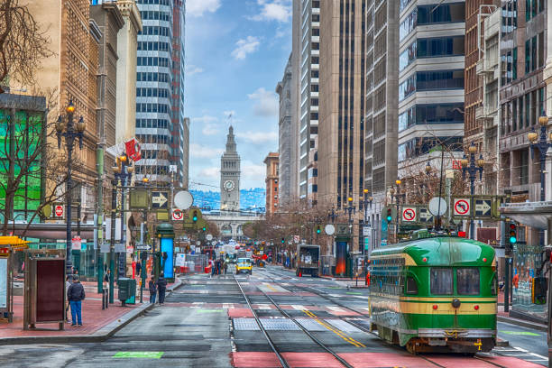
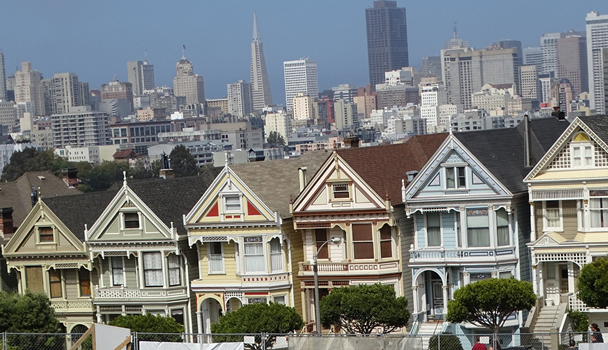
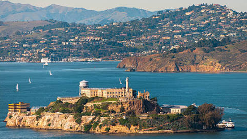

Why San Francisco?
A city of Hills
San Francisco was originally founded by Spanish settlers in 1776. Before European settlement, the region was inhabited by the indigenous Ohlone people. The area later came under Mexican rule before becoming part of the United States in 1846. The discovery of gold in 1848 attracted thousands of people to California during the Gold Rush, sparking rapid growth and transforming San Francisco into a thriving city and an important centre for trade and commerce.
Today, San Francisco is famous for its diverse culture, historic neighbourhoods and iconic landmarks, including the Golden Gate Bridge and Alcatraz Island. The city is also known for its distinctive hilly landscape, with more than 50 named hills, including Twin Peaks, which rises to 925 feet and is the city's highest natural point.
Attractions
Some Iconic Landmarks

The Painted Ladies
These are a famous row of colourful Victorian and Edwardian houses, on steiner street, between Hayes and Grove streets, overlooking Alamo Square Park.
Address:
Alamo Square Park
What I like about it
Built in the late nineteenth century, they became famous for their beautiful architecture, pastel colours and appearances in films, television shows and photographs, making them one of the city's most recognisable landmarks.

Lombard Street
There are public sidewalks and stairways on both sides of the famous crooked one-block stretch between Hyde Street and Leavenworth Street.
Address:
Lombard Street
What I like about it
This is one of San Francisco's most famous streets, known for its steep, winding section featuring eight sharp hairpin turns. Surrounded by beautiful flowers and gardens, it was designed to make the steep hill safer for cars. Located on Russian Hill, it attracts visitors from around the world.

Alcatraz Island
Located just offshore, Alcatraz Island was once home to one of America’s most notorious federal prisons.
Address:
Alcatraz Island
What I like about it
Today, it is a fascinating historic attraction, where visitors can explore the prison cells once occupied by infamous criminals such as Al Capone and Robert Stroud. A self-guided audio tour brings the island’s dark past to life, sharing intriguing stories and details as visitors explore the former prison buildings.